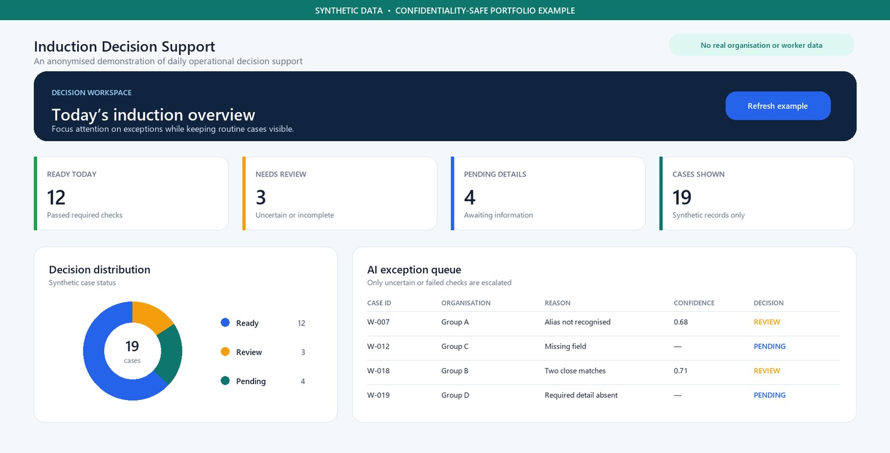

A four-month field internship at Longmotive — documenting how site operations,
worker coordination, and simple automation come together into tools people can actually use.
Your personal photo
images/portrait.jpg · 800×1000px
April — July 2026Longmotive
Construction site ops Johor · 5.5-day week
Field opsAutomationDashboards
The role
Operational work, close to the ground.
My internship sat where daily site support meets structured coordination —
stock and orders, office standards, worker inductions, and the habits that keep a site moving.
4months of field operations
5.5working days each week
1induction system built end-to-end
Featured project
From scattered records to one clear view.
The standout contribution was a more structured way to manage worker-induction information —
linking how people actually enter a site with simple, reliable data tools the team can use every day.
Worker induction tracking system
One process. One record. One status view.
Designed to make intake, tracking, and reporting easier. The system pairs a central spreadsheet
with automation and a visual dashboard so induction status is easy to check and discuss.

System screenshot
images/system.jpg
System viewSheets / intake workflow
Dashboard screenshot
images/dashboard.jpg
DashboardHTML / Power BI status board
Full workflow / architecture
images/workflow.jpg · optional wide shot
How it fits togetherIntake → Sheet → Automation → Dashboard
Unified intake — standardised the information captured during induction.
Central Google Sheet — kept records in one accessible source of truth.
Apps Script automation — reduced manual handling and kept records updated.
HTML + Power BI dashboard — made induction status easier to monitor and share.
On the ground
Progress in pictures.
Moments that don’t fit in a spreadsheet — site work, team events, tools in use,
and the journey from first week to final handover.
Site / daily ops
images/progress-01.jpg Portrait · ~600×900
Highlight moment
images/progress-04.jpg · Wide · ~1400×700
Internship highlightA moment that defined the four months
Drop your photos into the images/ folder using the filenames shown above
(for example portrait.jpg, dashboard.jpg). Placeholders fill in automatically when a matching file is present.
JPG, PNG, or WEBP all work — just keep the same name and extension, or update the src in the HTML.
Internship timeline
Four months, week by week.
Explore the work behind each month: the core responsibilities I handled continuously,
and the moments where I supported safety, communication, and site community.